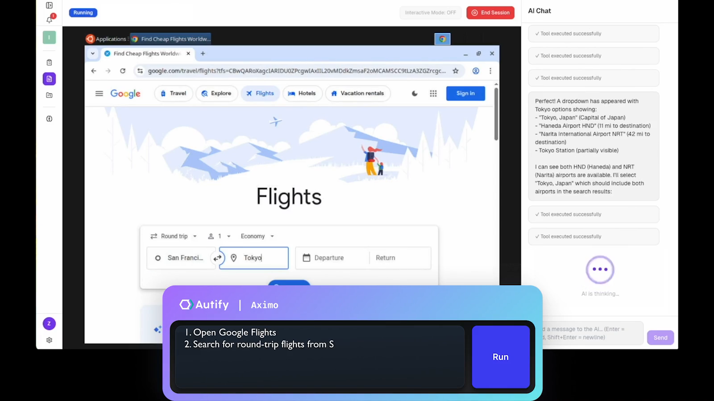
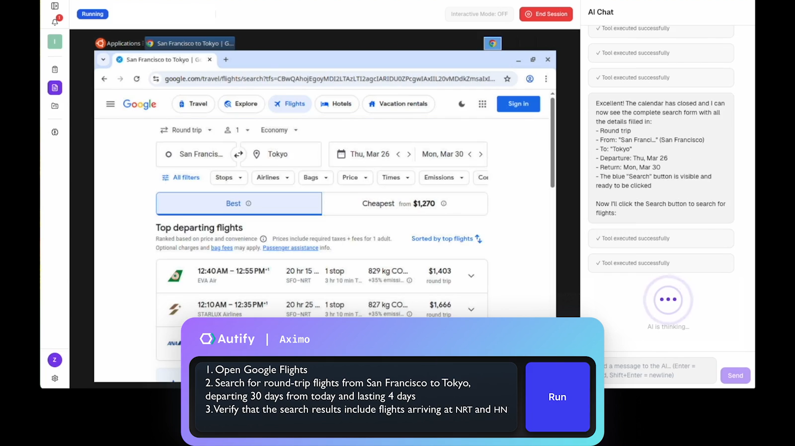
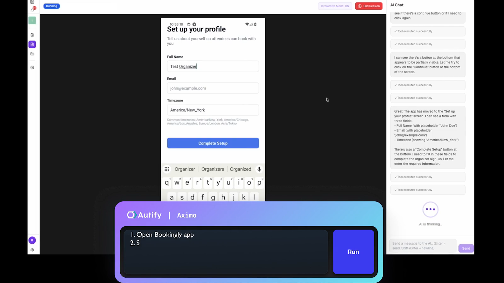
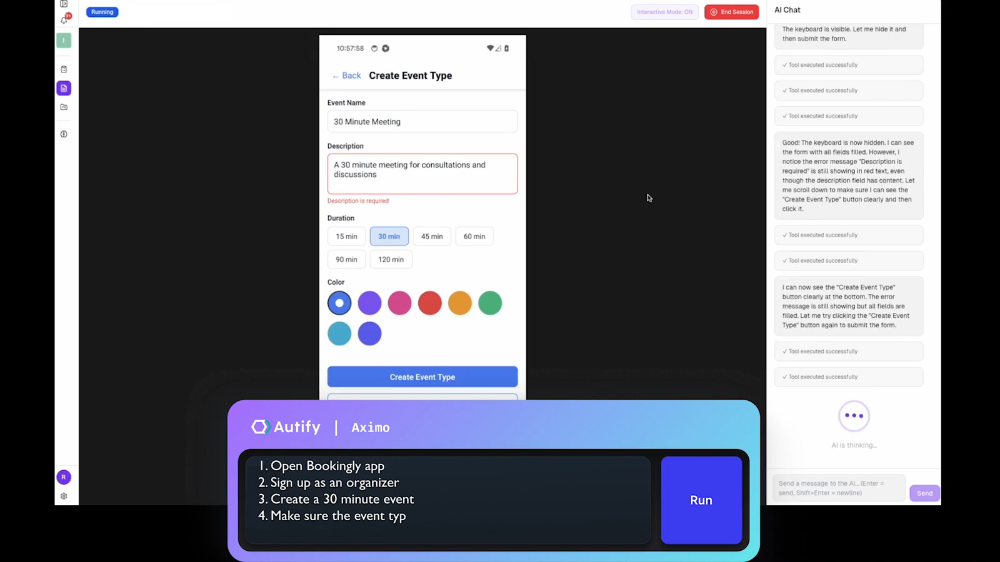
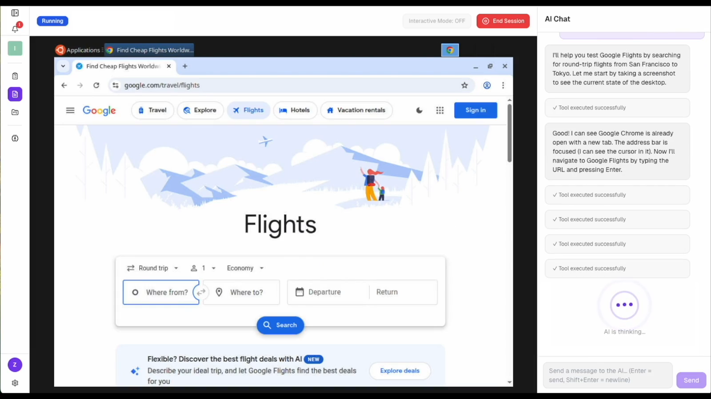
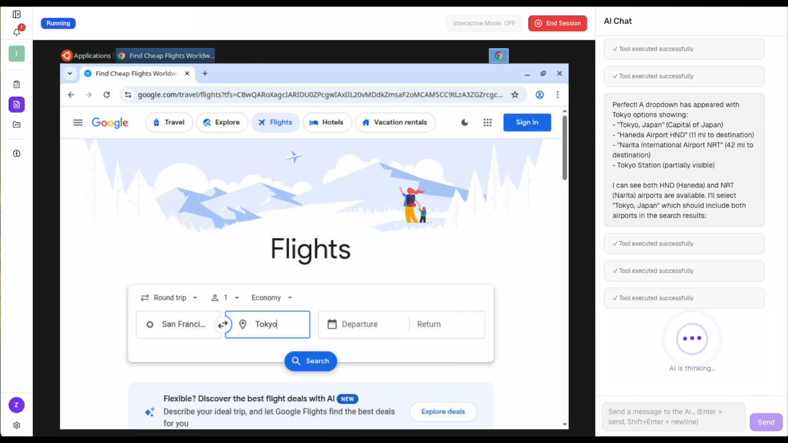
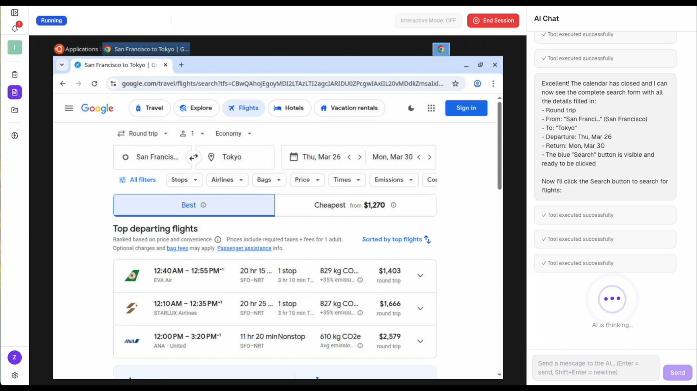
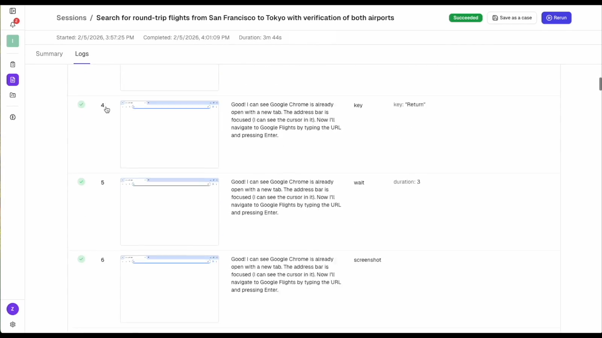
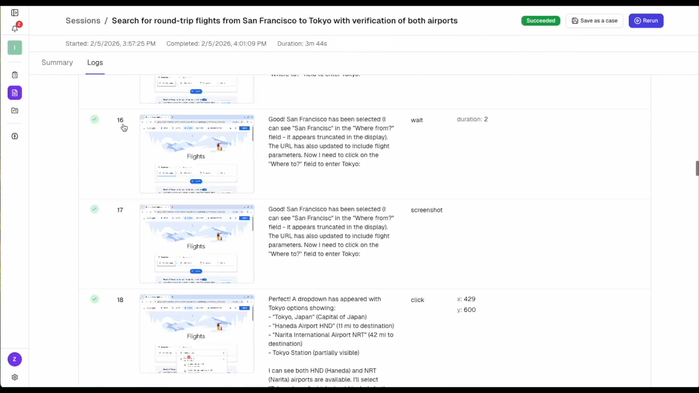

Autify Aximo — 機能・導線・画面
確認日：2026年10月27日。全体比較・画面／動画ギャラリー
調査範囲
Aximoは自然言語の期待から対象画面を操作し、ログ・結果へ進む。Autifyの他製品と混同しない。
収録動画は公式提供の操作例。自分で対象を指定して実行していない。自動保守の精度・権限・定期実行の実UIは未確認。
作業の流れ
Try Aximo → 対象とscenario → 自然言語で指示 → AI Chat＋対象画面 → 完了 → Summary／Logs → 再確認
機能の構成
公式映像では左の機能ナビ、中央のブラウザ／端末、右のAI Chat。結果画面にSummary／Logs、Save as caseの入口。
下表は公開説明・文書の要約。実操作した範囲は画面一覧と調査範囲に限定し、表全体を実機検証済みとはしない。
| 段階 | 画面・機能 | 入力・操作と次の行動 |
|---|---|---|
| 開始 | Try Aximo For Free | Aximoの利用入口へ進む。ログイン後の条件は未確認。 |
| 入力 | Describe・AI Chat | 何を操作し、何を確認するかを自然言語で記述する。 |
| 対象 | Web・モバイル等 | Google Flightsやモバイルの公式例がある。Windows／macOSも製品説明に含む。 |
| 実行 | Navigate | 対象画面の操作とAgentの進行説明を並べる。 |
| 進捗 | Session | 実行中は対象ブラウザ／端末とチャットを見ながら状況を追う。 |
| 結果 | Results・Summary | シナリオに対する結果を確認する。 |
| 証拠 | Logs | ステップごとの画像・説明・URL等を縦に追える。 |
| 再利用 | Save as case | セッションからケースへ残す入口を映像で確認。継続実行設定は未操作。 |
人の担当と比較上の着眼点
操作目標と期待結果の記述、結果・保存するケースの妥当性確認。
調査者の解釈：実行中の対象とAIの説明、終了後の根拠を分けるUI。短い自然言語入力でも期待の質は別評価が必要。 製品性能の優劣を実証した結論ではない。
動画と見る場面
- シナリオを自然言語で入力（16.3秒、official-product-video）。公式の掲載元。
見る場面：
3秒：操作の指示、
10秒：検索と期待の確認。 - モバイルシナリオの入力（20.0秒、official-product-video）。公式の掲載元。
見る場面：
3秒：プロフィール設定、
12秒：イベント作成。 - AI Chatと対象画面を並べた実行（36.8秒、official-product-video）。公式の掲載元。
見る場面：
3秒：対象画面とAI Chat、
14秒：日付の選択、
28秒：検索結果。 - 実行ログ・各ステップの画像（4.2秒、official-product-video）。公式の掲載元。
見る場面：
1秒：stepごとの記録、
3秒：画像と説明。


画面一覧
製品内の画面は未収録。公開説明に基づく機能表と、実際のUIを確認できた範囲を分けている。